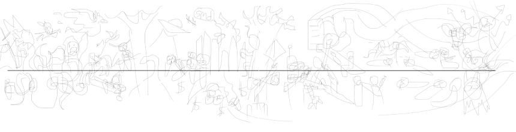
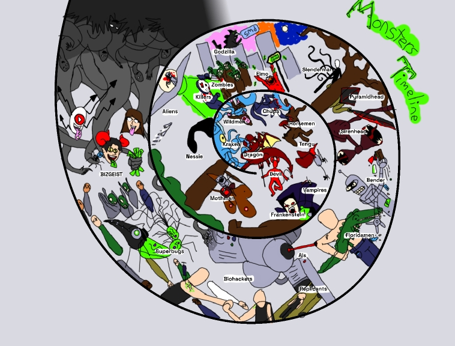

🎨 Monster Timeline Art 🎨
A ghoulish spiral monster timeline illustration drawn on Procreate
as part of a group project just in time for Halloween 🎃
I gave each monster their own unique colour so their silhouettes can be made out
Click and hold to enlarge images!

I made the background this coloured gradient so it corresponds
with the different eras on the full timeline below!

💥 IMPACT Summary
• Role: Timeline illustrator.
• Loved by and Personally Connected to our Audience!
• Sprial Stood out from the Crowd of Line Timelines!
• Timeline Extra Detailed and Perfect for Printing!
Freaky Foundation
Summary
Our group was tasked to make a themed timeline with the past, present, and a predicted future in 5 weeks. We chose the history of monsters because of the chronological and metaphorical depth we could take it! My role was to illustrate the central spiral timeline, including 25 monsters and 4 different eras in it. Can we pull of this horrific hijinx?
Chronology of the Creepy
Problem
We needed to a lot of research and data gathering in order to construct our upcoming presentation's basis and storytelling, not only on our specific monsters and on themimg for our monsters of the future, but also on the actual monster selection itself. We did both primary (done with a user survey) and secondary research to determind the most fitting selection of monsters for our timeline in order to find what fears perpetuate and repeat througout history, along with visual and formatting inspirations for the timeline itself.
Terrifying Timeline!
Process (Early in)

I started by drawing out the quick rough sketch concept of our timeline above with a monster selection we had at the time. This concept was a linear line but had all the basic ideas for imagery on the timeline. We didn't like the idea of a line format timeline because we wanted a unique way to represent the abstract idea of monsters that was a metaphor in of itself.
Process (Later on)

Next we floated around different timeline format ideas, like a circle-based planet orbit format for example, before landing on a spiral shaped format. We chose this shape for our timeline to represent the cultural ouroboros (or our society repeating itself culturally as shown with its collective fears) of the concept of monsters, and I made the more refined coloured concept you see above after our decision.
After adjustments to the spiral itself were made (like making it tilted for added 3D depth to make monsters pop and added space for our future ones, and added focus to make the eye look on the path from the center outwards) and a new monster selection that better fit each era and our themes, I was able to finish our monster timeline spiral.
A Fright to Remember...
Impact
We were able to finish in time for the spookiest day of the year! Our full group "A Monstrum Continuum" presentation was received super positively by our audience with all of its other components along with the spiral timeline, with it reminding the professor of "avant-garde from the 2000s" for example. It was able to stand out by being the only spiral timeline among other groups' line timelines, and I also made it super detailed to make it the most effective when printed at the large scale these timelines are printed at.
Our Inner Monster
Reflection
Our timeline and project storytelling went really well for this ghoulicious group project! One thing we could've done different with the spiral timeline was make it more image collage-y and added text to it if I had more time to draw it. We learned a lot of phylisophical things about the nature of humanity and how it mirrors and personifies fear from this, but for something less phylisophical then I personlly learned that I could make an illustrated timeline as big as that in as little time as it did.
Trick-or-Treating's End...
Conclusion
In closing, our spooky spiral timeline was one main component in our monster presentation on Halloween that stood out from the crowd and made them in awe. But you don't need to wait until next Halloween to contact me for a custom creative commision however!